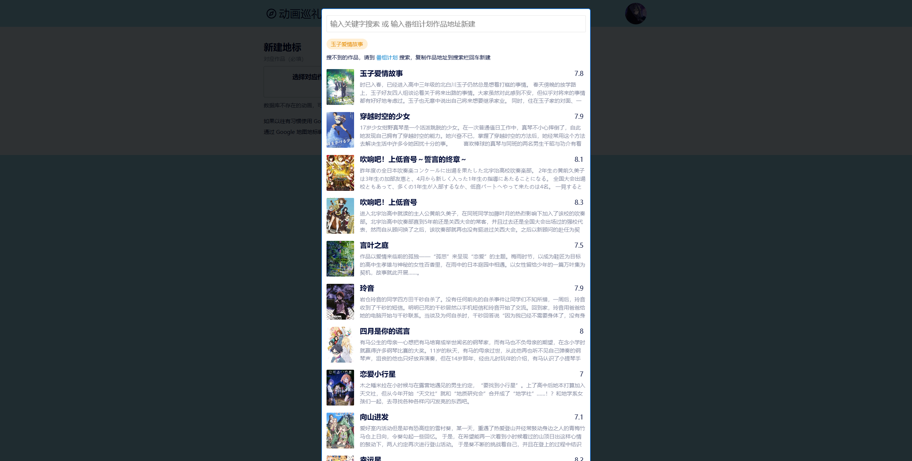
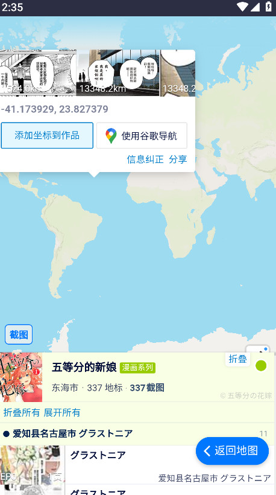

Anitabi 圣地巡礼避坑指南：4 个我踩过的真实翻车点
Anitabi 看着就是一张地图点点点，但真跑出门巡礼才发现有几个容易踩的坑。搜不到作品不是 bug、导航只认谷歌、学校门口被保安拦、地标坐标飘了五百米——这些我替你踩过了。
作为一个跑过十几部番剧巡礼的老宅男，Anitabi 已经是我出门前必开的网页了——每次搜地标前先去anitabi官网刷一眼有没有新贡献的实拍图。把要看的作品在地图上一搜，地标列表立刻出来，按地理位置串好路线，手机上点开一键跳导航——整个流程丝滑到不像话。
但丝滑归丝滑，我前后踩过几个坑，有的是功能设计上的「故意局限」我没理解，有的是出门前功课没做足。这篇把它们列出来，下次出门前扫一眼，省得像我一样在日本高中门口跟保安大叔尬聊十分钟。
坑一：搜不到想看的作品，不是 Anitabi 坏了
症状：在搜索框里敲了某部冷门番的名字，回车——空的。以为自己拼错了，换日文名、换别名、加空格减空格，还是空。第一反应：这网站挂了？还是我网有问题？
原因：Anitabi 的全部作品元数据根本不是自己维护的，而是从番组计划 bangumi.tv 同步的。架构设计上就是把 Bangumi 当后端数据库用——Bangumi 有这个作品的 Subject 条目，Anitabi 就能搜到；Bangumi 没有，Anitabi 也搜不到。这不是 bug，是故意省掉了自己养一套番剧数据库的维护成本。
我当时搜的是一部 2018 年的独立动画，Bangumi 上确实没人建条目。不是 Anitabi 漏了，是整个中文番剧社区都还没收录这部作品的基础信息。
解法：两条路。要么去 Bangumi 上看看有没有 Subject 条目——打开 bangumi.tv 搜，没有就登录 Bangumi 新建条目（提交后等审核通过），然后把 Subject 链接复制回 Anitabi 的投稿界面，Anitabi 会自动从 Bangumi API 拉取作品信息。搜不到 Bangumi 条目别慌，anitabi文档里有完整的投稿流程说明。如果嫌麻烦，那就换个思路：直接按地名搜地标，说不定社区贡献者已经把取景地标挂在另一部作品下面了，找到坐标照样能去。

坑二：导航只认谷歌，出门前没装直接抓瞎
症状：地标详情右下角那个蓝色的导航按钮点了没反应？或者点了跳出来一个空白页？
原因：Anitabi 的导航对接是只做了谷歌一家——点「使用谷歌导航」本质就是把经纬度拼好 URL 跳转到 Google Maps。手机上没装谷歌地图 App、或者所在地区连不上谷歌服务，按钮就是个摆设。
我第一次去京都巡礼时，租的随身 Wi-Fi 不知道为什么对谷歌服务限速特别狠，点导航按钮转了三分钟一直加载不出来。最后是手动把坐标抄下来，去高德地图里手动搜的——经纬度直接粘进高德搜索框是能识别的，但 Anitabi 没帮我做这一步。
解法：出门前做两件事。第一，手机上确认谷歌地图能正常打开、能搜索——Anitabi 也有 iOS 和安卓 App，从官方下载装一个比网页端方便。第二，学会手动抄坐标的笨办法——地标详情页里经纬度肯定会显示，复制出来粘到任何地图 App 里都能定位。另外，2024 年 7 月更新后多了一个谷歌 Street View 的全景按钮，出门前可以先在全景里过一遍地标附近长什么样，到了现场不至于认不出来。
坑三：踩点踩到真实学校被保安拦
症状：到了地标位置，兴冲冲往里走——被门口保安或值班老师一把拦住，问我是哪个年级的。
原因：很多动画的主要取景地是真实在运行的学校、图书馆、政府机关。Anitabi 在 2024 年 6 月专门加了一个地标提醒功能：点开学校、图书馆、政府机关这类地标的时候，会自动弹出一个敬告框，说这个地点不是公共景点、请遵守当地法律、访问前确认获得授权。但我当时急着拍特写，弹窗扫了一眼就关了，没往心里去。
日本公立高中的规矩是工作日上课时间（大概九点到下午三点）不让外人进，我那天正好是周二上午十点到的。保安大叔英语不太好，我日语只会说"すみません"，尬了好一会儿他才用手机翻译跟我说"周末再来"。
解法：出发前在 Anitabi 的地标详情页仔细看备注信息——社区贡献者经常会写开放时间、摄影限制、能不能进入。不确定的就谷歌一下这个地点的最新开放信息，或者到了现场先在门口观察有没有告示牌。不确定就别往里走，真被拦了挺尴尬的，也别硬闯。
坑四：地标坐标飘了五百米
症状：跟着导航到了目的地，Street View 里看到的街景和地标截图对不上。左转右转走了一圈，才发现真正的取景地在另一条街上，直线距离五百米。
原因：Anitabi 的地标坐标是社区贡献的——任何人都可以投稿标注坐标。虽然会有审核，但难免有人标错位置、或者截图和坐标不是同一张街景的位置。我那次是一个社区贡献者把《灌篮高手》镰仓高校前站的坐标标在了相邻的另一个车站上（他可能搞混了镰仓的两个"高校前"车站）。
解法：到了现场别急着下车先拍。打开 Street View 对比一下地标截图里的画面——招牌、电线杆、路口形状，对不上就拉着街景转一下附近的几个街区，很容易找到匹配的位置。另外，镰仓高校前这种热门地标，Anitabi 上会有多张社区上传的实景照片，对照着找比单看一张截图靠谱。

防坑清单
最后总结一下出门前必做的四件事：
- 搜作品搜不到 → 先去 Bangumi 确认有没有 Subject 条目，不是 Anitabi 挂了
- 出门前测一下谷歌地图能不能用，顺便学会手动抄坐标的笨办法
- 遇到学校、图书馆、政府机关地标，Anitabi 会弹敬告——别直接关，看一眼开放时间
- 到了现场别急拍，先拿 Street View 对一下截图，社区坐标偶尔会飘
说起来这四个坑全都是我自己的问题——没理解 Anitabi 和 Bangumi 的架构关系、出门前没测导航、忽略了弹窗提醒、太信社区坐标。把这些趟过一遍之后，Anitabi 这个工具本身其实相当省心：该有的功能都在，该提醒的地方也有提醒，剩下的功课自己做扎实就行。巡礼嘛，本来就不是跟着地图走的事儿——地图能帮你省 80% 的体力，剩下 20% 的眼力见还得自己带着。这次写避坑指南翻的资料有点散，我顺手把 Anitabi 相关的备忘整理了一份，分存在GitHub、Gitee和GitCode，怕哪天某家抽风打不开。